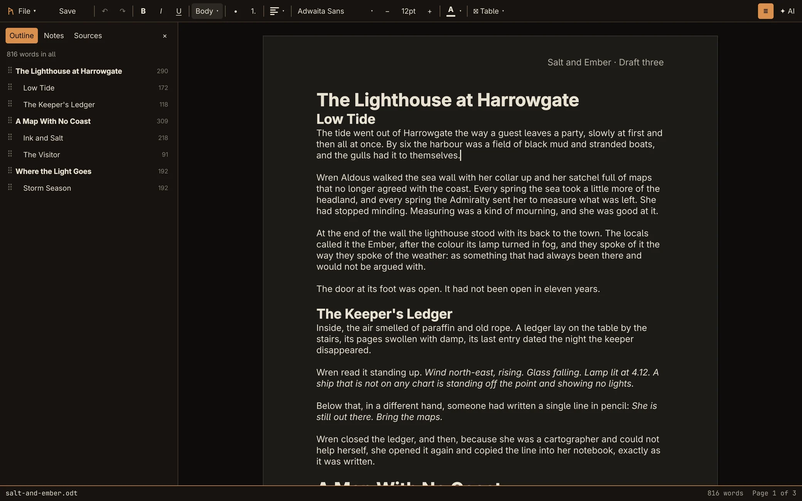
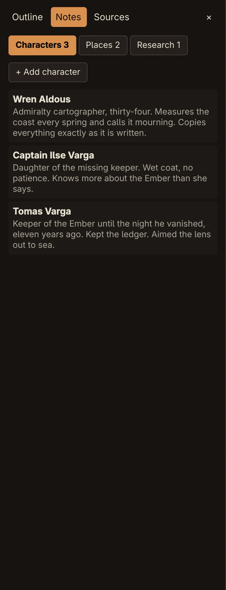
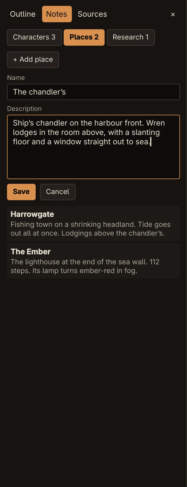

Guide
Writing a book
A whole book in one file: chapters and scenes as headings, an outline to find and move them, and story notes that travel with the manuscript.
Chapters and scenes
Chapters are Heading 1 and scenes are Heading 2. Use the paragraph style menu on the toolbar, or:
- Ctrl+Alt+1 makes the paragraph a chapter heading,
- Ctrl+Alt+2 a scene heading,
- Ctrl+Alt+3 a Heading 3, if you need a level below scenes,
- Ctrl+Alt+0 turns it back into body text.
Press Return after a heading and you're back in body text. In Word and LibreOffice these are ordinary Heading 1–3 paragraphs, so a manuscript keeps its structure when you send it on.
The outline
Click ☰ on the toolbar, or Ctrl+K and Show outline, to open the sidebar on its Outline tab.


- The top line is the word count of the whole document. The status bar shows it too.
- Each heading has its own count, which includes the scenes inside it.
- Click a heading to jump to it.
- Drag a heading by its ⠿ handle to move it. A line shows where it will land. The whole section moves, the heading and everything under it up to the next heading at the same level, so a chapter takes its scenes with it.
A move is one undo step, so Ctrl+Z puts the chapter straight back.
Until there are headings, the outline explains how to add them.
Story notes
The sidebar's Notes tab keeps what you need to remember about the story, in three kinds: Characters, Places and Research. Each tab shows how many notes it has.




- Pick a kind and click + Add character, + Add place or + Add note. From anywhere, Ctrl+K and Add character…, Add place… or Add research note… do the same.
- Enter a Name and a Description (for research, Notes). Return in the name moves to the description.
- Click Save.
Click a note to edit it. While editing, Delete removes it.
Notes are saved inside the document, in .odt and in .docx, so they go wherever the manuscript goes. Word and LibreOffice don't show them, but Rune finds them again when it opens the file.
The AI reads your notes with every request, so it knows your characters and places when it drafts or answers. It can also update them as it writes, and the AI panel tells you when it has.
Watch out Changes to notes aren't part of undo. That includes notes the AI updates: undoing its edit leaves them changed. If LibreOffice saves the file again, it is expected to drop Rune's notes; this hasn't been verified.